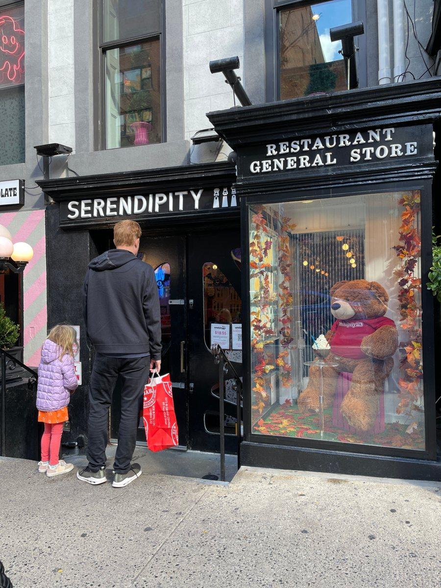
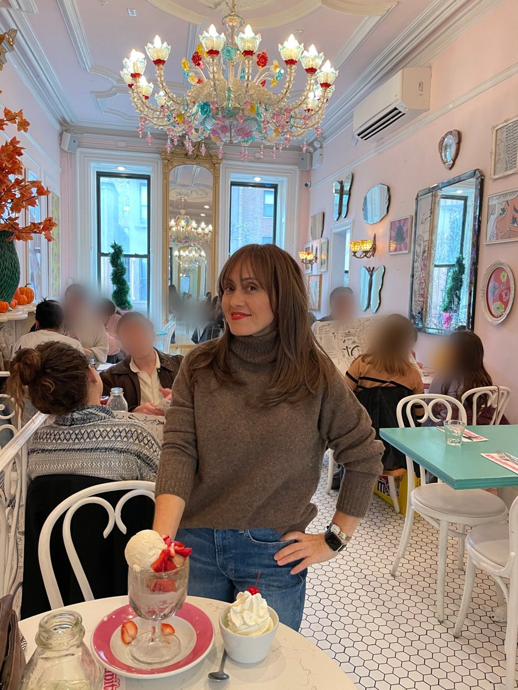
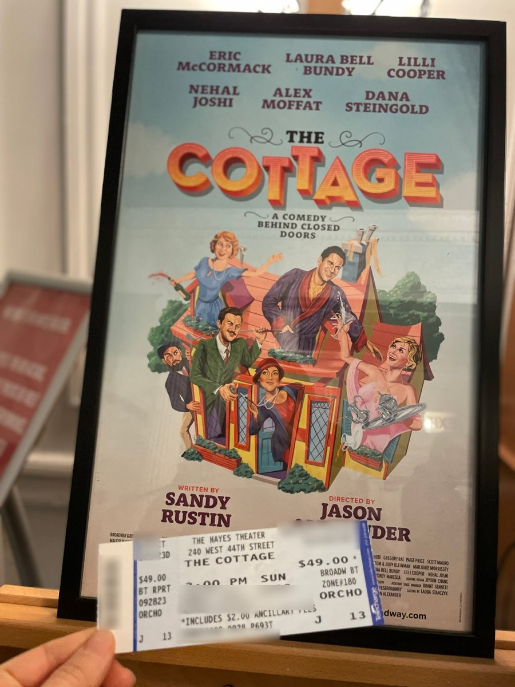
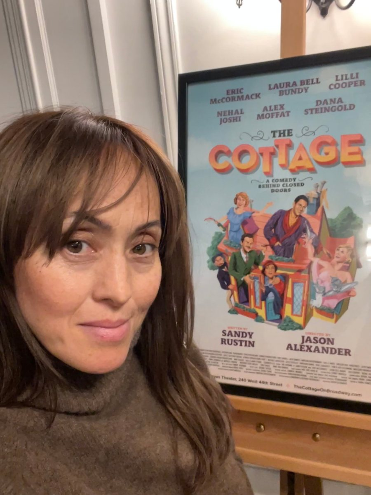
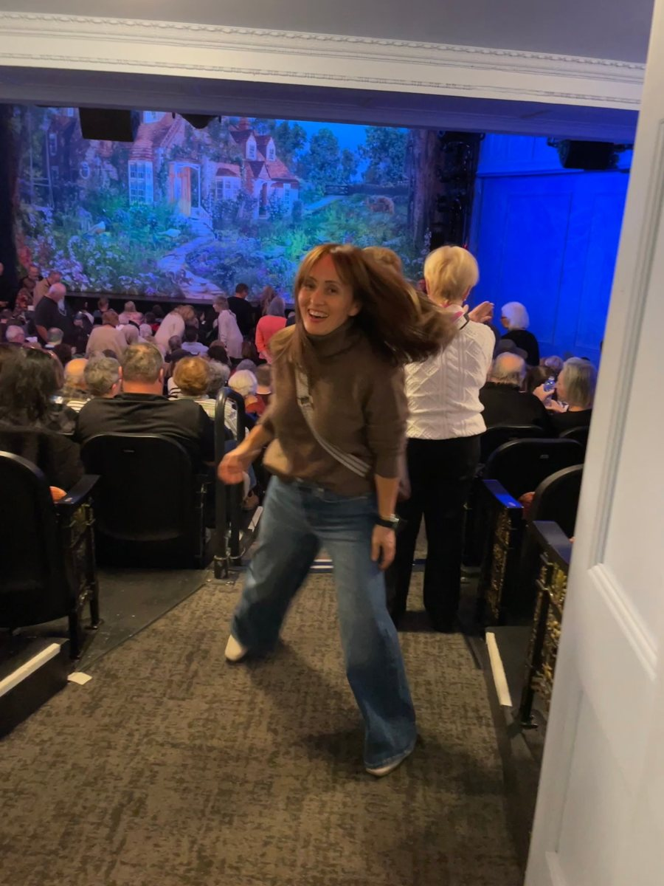

culture · Broadway · October 15, 2023

Serendipity, my day
October 15, 2023. My birthday 🎂
That summer, after a hard year in my marriage, and with my daughter just gone to college, for the first time in many years I could do something just for myself. Freely, without shame and without looking back.

happy birthday to me
making a wish
So I planned my day ahead. First, the famous Serendipity café, on my own 🍨 Strangers sang me "Happy Birthday", and I didn't feel lonely at all. Quite the opposite: it felt like finally flying, away from responsibilities and burdens, from always being there for everyone but myself 🕊️

my Broadway ticket
Then Broadway: The Cottage by Sandy Rustin at the Hayes Theater, a comedy behind closed doors 🎭 I went first of all because of Eric McCormack, and he was so close, and that was hot 😄🔥

The Cottage

dancing in the aisle
curtain call
Some scenes about betrayal and lies stirred up old, painful memories. But I shook them off and danced in the aisle 💃
Oct 15
Now, three years later, some of the wishes I made that day have come true ✨
← culture